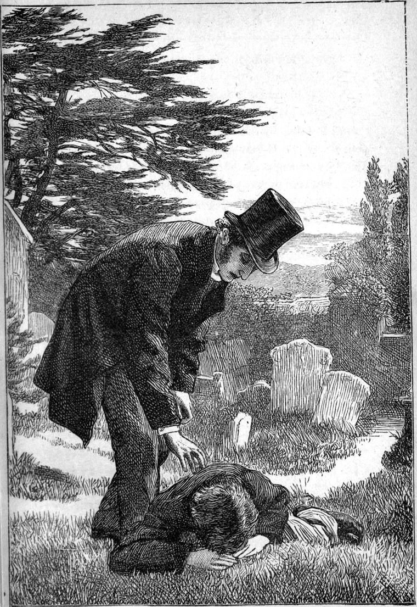

By slow degrees the summer bloomed. Green came instead of white; rainbows instead of icicles. The grounds about the Hall seemed the incarnation of a summer which had taken years to ripen to its perfection. The very grass seemed to have aged into perfect youth in that “haunt of ancient peace;” for surely nowhere else was such thick, delicate-bladed, delicate-coloured grass to be seen. Gnarled old trees of may stood like altars of smoking perfume, or each like one million-petalled flower of upheaved whiteness—or of tender rosiness, as if the snow which had covered it in winter had sunk in and gathered warmth from the life of the tree, and now crept out again to adorn the summer. The long loops of the laburnum hung heavy with gold towards the sod below; and the air was full of the fragrance of the young leaves of the limes. Down in the valley below, the daisies shone in all the meadows, varied with the buttercup and the celandine; while in damp places grew large pimpernels, and along the sides of the river, the meadow-sweet stood amongst the reeds at the very edge of the water, breathing out the odours of dreamful sleep. The clumsy pollards were each one mass of undivided green. The mill wheel had regained its knotty look, with its moss and its dip and drip, as it yielded to the slow water, which would have let it alone, but that there was no other way out of the land to the sea.
I used now to wander about in the fields and woods, with a book in my hand, at which I often did not look the whole day, and which yet I liked to have with me. And I seemed somehow to come back with most upon those days in which I did not read. In this manner I prepared almost all my sermons that summer. But, although I prepared them thus in the open country, I had another custom, which perhaps may appear strange to some, before I preached them. This was, to spend the Saturday evening, not in my study, but in the church. This custom of mine was known to the sexton and his wife, and the church was always clean and ready for me after about mid-day, so that I could be alone there as soon as I pleased. It would take more space than my limits will afford to explain thoroughly why I liked to do this. But I will venture to attempt a partial explanation in a few words.
This fine old church in which I was honoured to lead the prayers of my people, was not the expression of the religious feeling of my time. There was a gloom about it—a sacred gloom, I know, and I loved it; but such gloom as was not in my feeling when I talked to my flock. I honoured the place; I rejoiced in its history; I delighted to think that even by the temples made with hands outlasting these bodies of ours, we were in a sense united to those who in them had before us lifted up holy hands without wrath or doubting; and with many more who, like us, had lifted up at least prayerful hands without hatred or despair. The place soothed me, tuned me to a solemn mood—one of self-denial, and gentle gladness in all sober things. But, had I been an architect, and had I had to build a church—I do not in the least know how I should have built it—I am certain it would have been very different from this. Else I should be a mere imitator, like all the church-architects I know anything about in the present day. For I always found the open air the most genial influence upon me for the production of religious feeling and thought. I had been led to try whether it might not be so with me by the fact that our Lord seemed so much to delight in the open air, and late in the day as well as early in the morning would climb the mountain to be alone with His Father. I found that it helped to give a reality to everything that I thought about, if I only contemplated it under the high untroubled blue, with the lowly green beneath my feet, and the wind blowing on me to remind me of the Spirit that once moved on the face of the waters, bringing order out of disorder and light out of darkness, and was now seeking every day a fuller entrance into my heart, that there He might work the one will of the Father in heaven.
My reader will see then that there was, as it were, not so much a discord, as a lack of harmony between the surroundings wherein my thoughts took form, or, to use a homelier phrase, my sermon was studied, and the surroundings wherein I had to put these forms into the garments of words, or preach that sermon. I therefore sought to bridge over this difference (if I understood music, I am sure I could find an expression exactly fitted to my meaning),—to find an easy passage between the open-air mood and the church mood, so as to be able to bring into the church as much of the fresh air, and the tree-music, and the colour-harmony, and the gladness over all, as might be possible; and, in order to this, I thought all my sermon over again in the afternoon sun as it shone slantingly through the stained window over Lord Eagleye’s tomb, and in the failing light thereafter and the gathering dusk of the twilight, pacing up and down the solemn old place, hanging my thoughts here on a crocket, there on a corbel; now on the gable-point over which Weir’s face would gaze next morning, and now on the aspiring peaks of the organ. I thus made the place a cell of thought and prayer. And when the next day came, I found the forms around me so interwoven with the forms of my thought, that I felt almost like one of the old monks who had built the place, so little did I find any check to my thought or utterance from its unfitness for the expression of my individual modernism. But not one atom the more did I incline to the evil fancy that God was more in the past than in the present; that He is more within the walls of the church, than in the unwalled sky and earth; or seek to turn backwards one step from a living Now to an entombed and consecrated Past.
One lovely Saturday, I had been out all the morning. I had not walked far, for I had sat in the various places longer than I had walked, my path lying through fields and copses, crossing a country road only now and then. I had my Greek Testament with me, and I read when I sat, and thought when I walked. I remember well enough that I was going to preach about the cloud of witnesses, and explain to my people that this did not mean persons looking at, witnessing our behaviour—not so could any addition be made to the awfulness of the fact that the eye of God was upon us—but witnesses to the truth, people who did what God wanted them to do, come of it what might, whether a crown or a rack, scoffs or applause; to behold whose witnessing might well rouse all that was human and divine in us to chose our part with them and their Lord.—When I came home, I had an early dinner, and then betook myself to my Saturday’s resort.—I had never had a room large enough to satisfy me before. Now my study was to my mind.
All through the slowly-fading afternoon, the autumn of the day, when the colours are richest and the shadows long and lengthening, I paced my solemn old-thoughted church. Sometimes I went up into the pulpit and sat there, looking on the ancient walls which had grown up under men’s hands that men might be helped to pray by the visible symbol of unity which the walls gave, and that the voice of the Spirit of God might be heard exhorting men to forsake the evil and choose the good. And I thought how many witnesses to the truth had knelt in those ancient pews. For as the great church is made up of numberless communities, so is the great shining orb of witness-bearers made up of millions of lesser orbs. All men and women of true heart bear individual testimony to the truth of God, saying, “I have trusted and found Him faithful.” And the feeble light of the glowworm is yet light, pure, and good, and with a loveliness of its own. “So, O Lord,” I said, “let my light shine before men.” And I felt no fear of vanity in such a prayer, for I knew that the glory to come of it is to God only—“that men may glorify their Father in heaven.” And I knew that when we seek glory for ourselves, the light goes out, and the Horror that dwells in darkness breathes cold upon our spirits. And I remember that just as I thought thus, my eye was caught first by a yellow light that gilded the apex of the font-cover, which had been wrought like a flame or a bursting blossom: it was so old and worn, I never could tell which; and then by a red light all over a white marble tablet in the wall—the red of life on the cold hue of the grave. And this red light did not come from any work of man’s device, but from the great window of the west, which little Gerard Weir wanted to help God to paint. I must have been in a happy mood that Saturday afternoon, for everything pleased me and made me happier; and all the church-forms about me blended and harmonised graciously with the throne and footstool of God which I saw through the windows. And I lingered on till the night had come; till the church only gloomed about me, and had no shine; and then I found my spirit burning up the clearer, as a lamp which has been flaming all the day with light unseen becomes a glory in the room when the sun is gone down.
At length I felt tired, and would go home. Yet I lingered for a few moments in the vestry, thinking what hymns would harmonize best with the things I wanted to make my people think about. It was now almost quite dark out of doors—at least as dark as it would be.
Suddenly through the gloom I thought I heard a moan and a sob. I sat upright in my chair and listened. But I heard nothing more, and concluded I had deceived myself. After a few moments, I rose to go home and have some tea, and turn my mind rather away from than towards the subject of witness-bearing any more for that night, lest I should burn the fuel of it out before I came to warm the people with it, and should have to blow its embers instead of flashing its light and heat upon them in gladness. So I left the church by my vestry-door, which I closed behind me, and took my way along the path through the clustering group of graves.
Again I heard a sob. This time I was sure of it. And there lay something dark upon one of the grassy mounds. I approached it, but it did not move. I spoke.

“Can I be of any use to you?” I said.
“No,” returned an almost inaudible voice.
Though I did not know whose was the grave, I knew that no one had been buried there very lately, and if the grief were for the loss of the dead, it was more than probably aroused to fresh vigour by recent misfortune.
I stooped, and taking the figure by the arm, said, “Come with me, and let us see what can be done for you.”
I then saw that it was a youth—perhaps scarcely more than a boy. And as soon as I saw that, I knew that his grief could hardly be incurable. He returned no answer, but rose at once to his feet, and submitted to be led away. I took him the shortest road to my house through the shrubbery, brought him into the study, made him sit down in my easy-chair, and rang for lights and wine; for the dew had been falling heavily, and his clothes were quite dank. But when the wine came, he refused to take any.
“But you want it,” I said.
“No, sir, I don’t, indeed.”
“Take some for my sake, then.”
“I would rather not, sir.”
“Why?”
“I promised my father a year ago, when I left home that I would not drink anything stronger than water.[sic] And I can’t break my promise now.”
“Where is your home?”
“In the village, sir.”
“That wasn’t your father’s grave I found you upon, was it?”
“No, sir. It was my mother’s.”
“Then your father is still alive?”
“Yes, sir. You know him very well—Thomas Weir.”
“Ah! He told me he had a son in London. Are you that son?”
“Yes, sir,” answered the youth, swallowing a rising sob.
“Then what is the matter? Your father is a good friend of mine, and would tell you you might trust me.”
“I don’t doubt it, sir. But you won’t believe me any more than my father.”
By this time I had perused his person, his dress, and his countenance. He was of middle size, but evidently not full grown. His dress was very decent. His face was pale and thin, and revealed a likeness to his father. He had blue eyes that looked full at me, and, as far as I could judge, betokened, along with the whole of his expression, an honest and sensitive nature. I found him very attractive, and was therefore the more emboldened to press for the knowledge of his story.
“I cannot promise to believe whatever you say; but almost I could. And if you tell me the truth, I like you too much already to be in great danger of doubting you, for you know the truth has a force of its own.”
“I thought so till to-night,” he answered. “But if my father would not believe me, how can I expect you to do so, sir?”
“Your father may have been too much troubled by your story to be able to do it justice. It is not a bit like your father to be unfair.”
“No, sir. And so much the less chance of your believing me.”
Somehow his talk prepossessed me still more in his favour. There was a certain refinement in it, a quality of dialogue which indicated thought, as I judged; and I became more and more certain that, whatever I might have to think of it when told, he would yet tell me the truth.
“Come, try me,” I said.
“I will, sir. But I must begin at the beginning.”
“Begin where you like. I have nothing more to do to-night, and you may take what time you please. But I will ring for tea first; for I dare say you have not made any promise about that.”
A faint smile flickered on his face. He was evidently beginning to feel a little more comfortable.
“When did you arrive from London?” I asked.
“About two hours ago, I suppose.”
“Bring tea, Mrs Pearson, and that cold chicken and ham, and plenty of toast. We are both hungry.”
Mrs Pearson gave a questioning look at the lad, and departed to do her duty.
When she returned with the tray, I saw by the unconsciously eager way in which he looked at the eatables, that he had had nothing for some time; and so, even after we were left alone, I would not let him say a word till he had made a good meal. It was delightful to see how he ate. Few troubles will destroy a growing lad’s hunger; and indeed it has always been to me a marvel how the feelings and the appetites affect each other. I have known grief actually make people, and not sensual people at all, quite hungry. At last I thought I had better not offer him any more.
After the tea-things had been taken away, I put the candles out; and the moon, which had risen, nearly full, while we were at tea, shone into the room. I had thought that he might possibly find it easier to tell his story in the moonlight, which, if there were any shame in the recital, would not, by too much revelation, reduce him to the despair of Macbeth, when, feeling that he could contemplate his deed, but not his deed and himself together, he exclaimed,
“To know my deed, ’twere best not know myself.”
So, sitting by the window in the moonlight, he told his tale. The moon lighted up his pale face as he told it, and gave rather a wild expression to his eyes, eager to find faith in me.—I have not much of the dramatic in me, I know; and I am rather a flat teller of stories on that account. I shall not, therefore, seeing there is no necessity for it, attempt to give the tale in his own words. But, indeed, when I think of it, they did not differ so much from the form of my own, for he had, I presume, lost his provincialisms, and being, as I found afterwards, a reader of the best books that came in his way, had not caught up many cockneyisms instead.
He had filled a place in the employment of Messrs——& Co., large silk-mercers, linen-drapers, etc., etc., in London; for all the trades are mingled now. His work at first was to accompany one of the carts which delivered the purchases of the day; but, I presume because he showed himself to be a smart lad, they took him at length into the shop to wait behind the counter. This he did not like so much, but, as it was considered a rise in life, made no objection to the change.
He seemed to himself to get on pretty well. He soon learned all the marks on the goods intended to be understood by the shopmen, and within a few months believed that he was found generally useful. He had as yet had no distinct department allotted to him, but was moved from place to place, according as the local pressure of business might demand.
“I confess,” he said, “that I was not always satisfied with what was going on about me. I mean I could not help doubting if everything was done on the square, as they say. But nothing came plainly in my way, and so I could honestly say it did not concern me. I took care to be straightforward for my part, and, knowing only the prices marked for the sale of the goods, I had nothing to do with anything else. But one day, while I was showing a lady some handkerchiefs which were marked as mouchoirs de Paris—I don’t know if I pronounce it right, sir—she said she did not believe they were French cambric; and I, knowing nothing about it, said nothing. But, happening to look up while we both stood silent, the lady examining the handkerchiefs, and I doing nothing till she should have made up her mind, I caught sight of the eyes of the shop-walker, as they call the man who shows customers where to go for what they want, and sees that they are attended to. He is a fat man, dressed in black, with a great gold chain, which they say in the shop is only copper gilt. But that doesn’t matter, only it would be the liker himself. He was standing staring at me. I could not tell what to make of it; but from that day I often caught him watching me, as if I had been a customer suspected of shop-lifting. Still I only thought he was very disagreeable, and tried to forget him.
“One day—the day before yesterday—two ladies, an old lady and a young one, came into the shop, and wanted to look at some shawls. It was dinner-time, and most of the men were in the house at their dinner. The shop-walker sent me to them, and then, I do believe, though I did not see him, stood behind a pillar to watch me, as he had been in the way of doing more openly. I thought I had seen the ladies before, and though I could not then tell where, I am now almost sure they were Mrs and Miss Oldcastle, of the Hall. They wanted to buy a cashmere for the young lady. I showed them some. They wanted better. I brought the best we had, inquiring, that I might make no mistake. They asked the price. I told them. They said they were not good enough, and wanted to see some more. I told them they were the best we had. They looked at them again; said they were sorry, but the shawls were not good enough, and left the shop without buying anything. I proceeded to take the shawls up-stairs again, and, as I went, passed the shop walker, whom I had not observed while I was attending to the ladies. ‘YOU’re for no good, young man!’ he said with a nasty sneer. ‘What do you mean by that, Mr B.?’ I asked, for his sneer made me angry. ‘You’ll know before to-morrow,’ he answered, and walked away. That same evening, as we were shutting up shop, I was sent for to the principal’s room. The moment I entered, he said, ‘You won’t suit us, young man, I find. You had better pack up your box to-night, and be off to-morrow. There’s your quarter’s salary.’ ‘What have I done?’ I asked in astonishment, and yet with a vague suspicion of the matter. ‘It’s not what you’ve done, but what you don’t do,’ he answered. ‘Do you think we can afford to keep you here and pay you wages to send people away from the shop without buying? If you do, you’re mistaken, that’s all. You may go.’ ‘But what could I do?’ I said. ‘I suppose that spy, B—-,’—I believe I said so, sir. ‘Now, now, young man, none of your sauce!’ said Mr—-. ‘Honest people don’t think about spies.’ ‘I thought it was for honesty you were getting rid of me,’ I said. Mr—-rose to his feet, his lips white, and pointed to the door. ‘Take your money and be off. And mind you don’t refer to me for a character. After such impudence I couldn’t in conscience give you one.’ Then, calming down a little when he saw I turned to go, ‘You had better take to your hands again, for your head will never keep you. There, be off!’ he said, pushing the money towards me, and turning his back to me. I could not touch it. ‘Keep the money, Mr—-,’ I said. ‘It’ll make up for what you’ve lost by me.’ And I left the room at once without waiting for an answer.
“While I was packing my box, one of my chums came in, and I told him all about it. He is rather a good fellow that, sir; but he laughed, and said, ‘What a fool you are, Weir! YOU’ll never make your daily bread, and you needn’t think it. If you knew what I know, you’d have known better. And it’s very odd it was about shawls, too. I’ll tell you. As you’re going away, you won’t let it out. Mr—-’ (that was the same who had just turned me away) ‘was serving some ladies himself, for he wasn’t above being in the shop, like his partner. They wanted the best Indian shawl they could get. None of those he showed them were good enough, for the ladies really didn’t know one from another. They always go by the price you ask, and Mr—-knew that well enough. He had sent me up-stairs for the shawls, and as I brought them he said, “These are the best imported, madam.” There were three ladies; and one shook her head, and another shook her head, and they all shook their heads. And then Mr—-was sorry, I believe you, that he had said they were the best. But you won’t catch him in a trap! He’s too old a fox for that.’ I’m telling you, sir, what Johnson told me. ‘He looked close down at the shawls, as if he were short-sighted, though he could see as far as any man. “I beg your pardon, ladies,” said he, “you’re right. I am quite wrong. What a stupid blunder to make! And yet they did deceive me. Here, Johnson, take these shawls away. How could you be so stupid? I will fetch the thing you want myself, ladies.” So I went with him. He chose out three or four shawls, of the nicest patterns, from the very same lot, marked in the very same way, folded them differently, and gave them to me to carry down. “Now, ladies, here they are!” he said. “These are quite a different thing, as you will see; and, indeed, they cost half as much again.” In five minutes they had bought two of them, and paid just half as much more than he had asked for them the first time. That’s Mr—-! and that’s what you should have done if you had wanted to keep your place.’—But I assure you, sir, I could not help being glad to be out of it.”
“But there is nothing in all this to be miserable about,” I said. “You did your duty.”
“It would be all right, sir, if father believed me. I don’t want to be idle, I’m sure.”
“Does your father think you do?”
“I don’t know what he thinks. He won’t speak to me. I told my story—as much of it as he would let me, at least—but he wouldn’t listen to me. He only said he knew better than that. I couldn’t bear it. He always was rather hard upon us. I’m sure if you hadn’t been so kind to me, sir, I don’t know what I should have done by this time. I haven’t another friend in the world.”
“Yes, you have. Your Father in heaven is your friend.”
“I don’t know that, sir. I’m not good enough.”
“That’s quite true. But you would never have done your duty if He had not been with you.”
“DO you think so, sir?” he returned, eagerly.
“Indeed, I do. Everything good comes from the Father of lights. Every one that walks in any glimmering of light walks so far in HIS light. For there is no light—only darkness—comes from below. And man apart from God can generate no light. He’s not meant to be separated from God, you see. And only think then what light He can give you if you will turn to Him and ask for it. What He has given you should make you long for more; for what you have is not enough—ah! far from it.”
“I think I understand. But I didn’t feel good at all in the matter. I didn’t see any other way of doing.”
“So much the better. We ought never to feel good. We are but unprofitable servants at best. There is no merit in doing your duty; only you would have been a poor wretched creature not to do as you did. And now, instead of making yourself miserable over the consequences of it, you ought to bear them like a man, with courage and hope, thanking God that He has made you suffer for righteousness’ sake, and denied you the success and the praise of cheating. I will go to your father at once, and find out what he is thinking about it. For no doubt Mr—-has written to him with his version of the story. Perhaps he will be more inclined to believe you when he finds that I believe you.”
“Oh, thank you, sir!” cried the lad, and jumped up from his seat to go with me.
“No,” I said; “you had better stay where you are. I shall be able to speak more freely if you are not present. Here is a book to amuse yourself with. I do not think I shall be long gone.”
But I was longer gone than I thought I should be.
When I reached the carpenter’s house, I found, to my surprise, that he was still at work. By the light of a single tallow candle placed beside him on the bench, he was ploughing away at a groove. His pale face, of which the lines were unusually sharp, as I might have expected after what had occurred, was the sole object that reflected the light of the candle to my eyes as I entered the gloomy place. He looked up, but without even greeting me, dropped his face again and went on with his work.
“What!” I said, cheerily,—for I believed that, like Gideon’s pitcher, I held dark within me the light that would discomfit his Midianites, which consciousness may well make the pitcher cheery inside, even while the light as yet is all its own—worthless, till it break out upon the world, and cease to illuminate only glazed pitcher-sides—“What!” I said, “working so late?”
“Yes, sir.”
“It is not usual with you, I know.”
“It’s all a humbug!” he said fiercely, but coldly notwithstanding, as he stood erect from his work, and turned his white face full on me—of which, however, the eyes drooped—“It’s all a humbug; and I don’t mean to be humbugged any more.”
“Am I a humbug?” I returned, not quite taken by surprise.
“I don’t say that. Don’t make a personal thing of it, sir. You’re taken in, I believe, like the rest of us. Tell me that a God governs the world! What have I done, to be used like this?”
I thought with myself how I could retort for his young son: “What has he done to be used like this?” But that was not my way, though it might work well enough in some hands. Some men are called to be prophets. I could only “stand and wait.”
“It would be wrong in me to pretend ignorance,” I said, “of what you mean. I know all about it.”
“Do you? He has been to you, has he? But you don’t know all about it, sir. The impudence of the young rascal!”
He paused for a moment.
“A man like me!” he resumed, becoming eloquent in his indignation, and, as I thought afterwards, entirely justifying what Wordsworth says about the language of the so-called uneducated,—“A man like me, who was as proud of his honour as any aristocrat in the country—prouder than any of them would grant me the right to be!”
“Too proud of it, I think—not too careful of it,” I said. But I was thankful he did not heed me, for the speech would only have irritated him. He went on.
“Me to be treated like this! One child a ...”
Here came a terrible break in his speech. But he tried again.
“And the other a ...”
Instead of finishing the sentence, however, he drove his plough fiercely through the groove, splitting off some inches of the wall of it at the end.
“If any one has treated you so,” I said, “it must be the devil, not God.”
“But if there was a God, he could have prevented it all.”
“Mind what I said to you once before: He hasn’t done yet. And there is another enemy in His way as bad as the devil—I mean our SELVES. When people want to walk their own way without God, God lets them try it. And then the devil gets a hold of them. But God won’t let him keep them. As soon as they are ‘wearied in the greatness of their way,’ they begin to look about for a Saviour. And then they find God ready to pardon, ready to help, not breaking the bruised reed—leading them to his own self manifest—with whom no man can fear any longer, Jesus Christ, the righteous lover of men—their elder brother—what we call BIG BROTHER, you know—one to help them and take their part against the devil, the world, and the flesh, and all the rest of the wicked powers. So you see God is tender—just like the prodigal son’s father—only with this difference, that God has millions of prodigals, and never gets tired of going out to meet them and welcome them back, every one as if he were the only prodigal son He had ever had. There’s a father indeed! Have you been such a father to your son?”
“The prodigal didn’t come with a pack of lies. He told his father the truth, bad as it was.”
“How do you know that your son didn’t tell you the truth? All the young men that go from home don’t do as the prodigal did. Why should you not believe what he tells you?”
“I’m not one to reckon without my host. Here’s my bill.”
And so saying, he handed me a letter. I took it and read:—
“SIR,—It has become our painful duty to inform you that your son has this day been discharged from the employment of Messrs—-and Co., his conduct not being such as to justify the confidence hitherto reposed in him. It would have been contrary to the interests of the establishment to continue him longer behind the counter, although we are not prepared to urge anything against him beyond the fact that he has shown himself absolutely indifferent to the interests of his employers. We trust that the chief blame will be found to lie with certain connexions of a kind easy to be formed in large cities, and that the loss of his situation may be punishment sufficient, if not for justice, yet to make him consider his ways and be wise. We enclose his quarter’s salary, which the young man rejected with insult, and,
“We remain, &c.,
”—— and Co.”
“And,” I exclaimed, “this is what you found your judgment of your own son upon! You reject him unheard, and take the word of a stranger! I don’t wonder you cannot believe in your Father when you behave so to your son. I don’t say your conclusion is false, though I don’t believe it. But I do say the grounds you go upon are anything but sufficient.”
“You don’t mean to tell me that a man of Mr—-’s standing, who has one of the largest shops in London, and whose brother is Mayor of Addicehead, would slander a poor lad like that!”
“Oh you mammon-worshipper!” I cried. “Because a man has one of the largest shops in London, and his brother is Mayor of Addicehead, you take his testimony and refuse your son’s! I did not know the boy till this evening; but I call upon you to bring back to your memory all that you have known of him from his childhood, and then ask yourself whether there is not, at least, as much probability of his having remained honest as of the master of a great London shop being infallible in his conclusions—at which conclusions, whatever they be, I confess no man can wonder, after seeing how readily his father listens to his defamation.”
I spoke with warmth. Before I had done, the pale face of the carpenter was red as fire; for he had been acting contrary to all his own theories of human equality, and that in a shameful manner. Still, whether convinced or not, he would not give in. He only drove away at his work, which he was utterly destroying. His mouth was closed so tight, he looked as if he had his jaw locked; and his eyes gleamed over the ruined board with a light which seemed to me to have more of obstinacy in it than contrition.
“Ah, Thomas!” I said, taking up the speech once more, “if God had behaved to us as you have behaved to your boy—be he innocent, be he guilty—there’s not a man or woman of all our lost race would have returned to Him from the time of Adam till now. I don’t wonder that you find it difficult to believe in Him.”
And with those words I left the shop, determined to overwhelm the unbeliever with proof, and put him to shame before his own soul, whence, I thought, would come even more good to him than to his son. For there was a great deal of self-satisfaction mixed up with the man’s honesty, and the sooner that had a blow the better—it might prove a death-blow in the long run. It was pride that lay at the root of his hardness. He visited the daughter’s fault upon the son. His daughter had disgraced him; and he was ready to flash into wrath with his son upon any imputation which recalled to him the torture he had undergone when his daughter’s dishonour came first to the light. Her he had never forgiven, and now his pride flung his son out after her upon the first suspicion. His imagination had filled up all the blanks in the wicked insinuations of Mr—-. He concluded that he had taken money to spend in the worst company, and had so disgraced him beyond forgiveness. His pride paralysed his love. He thought more about himself than about his children. His own shame outweighed in his estimation the sadness of their guilt. It was a less matter that they should be guilty, than that he, their father, should be disgraced.
Thinking over all this, and forgetting how late it was, I found myself half-way up the avenue of the Hall. I wanted to find out whether young Weir’s fancy that the ladies he had failed in serving, or rather whom he had really served with honesty, were Mrs and Miss Oldcastle, was correct. What a point it would be if it was! I should not then be satisfied except I could prevail on Miss Oldcastle to accompany me to Thomas Weir, and shame the faithlessness out of him. So eager was I after certainty, that it was not till I stood before the house that I saw clearly the impropriety of attempting anything further that night. One light only was burning in the whole front, and that was on the first floor.
Glancing up at it, I knew not why, as I turned to go down the hill again, I saw a corner of the blind drawn aside and a face peeping out—whose, I could not tell. This was uncomfortable—for what could be taking me there at such a time? But I walked steadily away, certain I could not escape recognition, and determining to refer to this ill-considered visit when I called the next day. I would not put it off till Monday, I was resolved.
I lingered on the bridge as I went home. Not a light was to be seen in the village, except one over Catherine Weir’s shop. There were not many restless souls in my parish—not so many as there ought to be. Yet gladly would I see the troubled in peace—not a moment, though, before their troubles should have brought them where the weary and heavy-laden can alone find rest to their souls—finding the Father’s peace in the Son—the Father himself reconciling them to Himself.
How still the night was! My soul hung, as it were, suspended in stillness; for the whole sphere of heaven seemed to be about me, the stars above shining as clear below in the mirror of the all but motionless water. It was a pure type of the “rest that remaineth”—rest, the one immovable centre wherein lie all the stores of might, whence issue all forces, all influences of making and moulding. “And, indeed,” I said to myself, “after all the noise, uproar, and strife that there is on the earth, after all the tempests, earthquakes, and volcanic outbursts, there is yet more of peace than of tumult in the world. How many nights like this glide away in loveliness, when deep sleep hath fallen upon men, and they know neither how still their own repose, nor how beautiful the sleep of nature! Ah, what must the stillness of the kingdom be? When the heavenly day’s work is done, with what a gentle wing will the night come down! But I bethink me, the rest there, as here, will be the presence of God; and if we have Him with us, the battle-field itself will be—if not quiet, yet as full of peace as this night of stars.” So I spoke to myself, and went home.
I had little immediate comfort to give my young guest, but I had plenty of hope. I told him he must stay in the house to-morrow; for it would be better to have the reconciliation with his father over before he appeared in public. So the next day neither Weir was at church.
As soon as the afternoon service was over, I went once more to the Hall, and was shown into the drawing-room—a great faded room, in which the prevailing colour was a dingy gold, hence called the yellow drawing-room when the house had more than one. It looked down upon the lawn, which, although little expense was now laid out on any of the ornamental adjuncts of the Hall, was still kept very nice. There sat Mrs Oldcastle reading, with her face to the house. A little way farther on, Miss Oldcastle sat, with a book on her knee, but her gaze fixed on the wide-spread landscape before her, of which, however, she seemed to be as inobservant as of her book. I caught glimpses of Judy flitting hither and thither among the trees, never a moment in one place.
Fearful of having an interview with the old lady alone, which was not likely to lead to what I wanted, I stepped from a window which was open, out upon the terrace, and thence down the steps to the lawn below. The servant had just informed Mrs Oldcastle of my visit when I came near. She drew herself up in her chair, and evidently chose to regard my approach as an intrusion.
“I did not expect a visit from you to-day, Mr Walton, you will allow me to say.”
“I am doing Sunday work,” I answered. “Will you kindly tell me whether you were in London on Thursday last? But stay, allow me to ask Miss Oldcastle to join us.”
Without waiting for answer, I went to Miss Oldcastle, and begged her to come and listen to something in which I wanted her help. She rose courteously though without cordiality, and accompanied me to her mother, who sat with perfect rigidity, watching us.
“Again let me ask,” I said, “if you were in London on Thursday.”
Though I addressed the old lady, the answer came from her daughter.
“Yes, we were.”
“Were you in—-& Co.’s, in—-Street?”
But now before Miss Oldcastle could reply, her mother interposed.
“Are we charged with shoplifting, Mr Walton? Really, one is not accustomed to such cross-questioning—except from a lawyer.”
“Have patience with me for a moment,” I returned. “I am not going to be mysterious for more than two or three questions. Please tell me whether you were in that shop or not.”
“I believe we were,” said the mother.
“Yes, certainly,” said the daughter.
“Did you buy anything?”
“No. We—” Miss Oldcastle began.
“Not a word more,” I exclaimed eagerly. “Come with me at once.”
“What DO you mean, Mr Walton?” said the mother, with a sort of cold indignation, while the daughter looked surprised, but said nothing.
“I beg your pardon for my impetuosity; but much is in your power at this moment. The son of one of my parishioners has come home in trouble. His father, Thomas Weir—”
“Ah!” said Mrs Oldcastle, in a tone considerably at strife with refinement. But I took no notice.
“His father will not believe his story. The lad thinks you were the ladies in serving whom he got into trouble. I am so confident he tells the truth, that I want Miss Oldcastle to be so kind as to accompany me to Weir’s house—”
“Really, Mr Walton, I am astonished at your making such a request!” exclaimed Mrs Oldcastle, with suitable emphasis on every salient syllable, while her white face flushed with anger. “To ask Miss Oldcastle to accompany you to the dwelling of the ringleader of all the canaille of the neighbourhood!”
“It is for the sake of justice,” I interposed.
“That is no concern of ours. Let them fight it out between them, I am sure any trouble that comes of it is no more than they all deserve. A low family—men and women of them.”
“I assure you, I think very differently.”
“I daresay you do.”
“But neither your opinion nor mine has anything to do with the matter.”
Here I turned to Miss Oldcastle and went on—
“It is a chance which seldom occurs in one’s life, Miss Oldcastle—a chance of setting wrong right by a word; and as a minister of the gospel of truth and love, I beg you to assist me with your presence to that end.”
I would have spoken more strongly, but I knew that her word given to me would be enough without her presence. At the same time, I felt not only that there would be a propriety in her taking a personal interest in the matter, but that it would do her good, and tend to create a favour towards each other in some of my flock between whom at present there seemed to be nothing in common.
But at my last words, Mrs Oldcastle rose to her feet no longer red—now whiter than her usual whiteness with passion.
“You dare to persist! You take advantage of your profession to persist in dragging my daughter into a vile dispute between mechanics of the lowest class—against the positive command of her only parent! Have you no respect for her position in society?—for her sex? MISTER WALTON, you act in a manner unworthy of your cloth.”
I had stood looking in her eyes with as much self-possession as I could muster. And I believe I should have borne it all quietly, but for that last word.
If there is one epithet I hate more than another, it is that execrable word CLOTH—used for the office of a clergyman. I have no time to set forth its offence now. If my reader cannot feel it, I do not care to make him feel it. Only I am sorry to say it overcame my temper.
“Madam,” I said, “I owe nothing to my tailor. But I owe God my whole being, and my neighbour all I can do for him. ‘He that loveth not his brother is a murderer,’ or murderess, as the case may be.”
At that word MURDERESS, her face became livid, and she turned away without reply. By this time her daughter was half way to the house. She followed her. And here was I left to go home, with the full knowledge that, partly from trying to gain too much, and partly from losing my temper, I had at best but a mangled and unsatisfactory testimony to carry back to Thomas Weir. Of course I walked away—round the end of the house and down the avenue; and the farther I went the more mortified I grew. It was not merely the shame of losing my temper, though that was a shame—and with a woman too, merely because she used a common epithet!—but I saw that it must appear very strange to the carpenter that I was not able to give a more explicit account of some sort, what I had learned not being in the least decisive in the matter. It only amounted to this, that Mrs and Miss Oldcastle were in the shop on the very day on which Weir was dismissed. It proved that so much of what he had told me was correct—nothing more. And if I tried to better the matter by explaining how I had offended them, would it not deepen the very hatred I had hoped to overcome? In fact, I stood convicted before the tribunal of my own conscience of having lost all the certain good of my attempt, in part at least from the foolish desire to produce a conviction OF Weir rather than IN Weir, which should be triumphant after a melodramatic fashion, and—must I confess it?—should PUNISH him for not believing in his son when I did; forgetting in my miserable selfishness that not to believe in his son was an unspeakably worse punishment in itself than any conviction or consequent shame brought about by the most overwhelming of stage-effects. I assure my reader, I felt humiliated.
Now I think humiliation is a very different condition of mind from humility. Humiliation no man can desire: it is shame and torture. Humility is the true, right condition of humanity—peaceful, divine. And yet a man may gladly welcome humiliation when it comes, if he finds that with fierce shock and rude revulsion it has turned him right round, with his face away from pride, whither he was travelling, and towards humility, however far away upon the horizon’s verge she may sit waiting for him. To me, however, there came a gentle and not therefore less effective dissolution of the bonds both of pride and humiliation; and before Weir and I met, I was nearly as anxious to heal his wounded spirit, as I was to work justice for his son.
I was walking slowly, with burning cheek and downcast eyes, the one of conflict, the other of shame and defeat, away from the great house, which seemed to be staring after me down the avenue with all its window-eyes, when suddenly my deliverance came. At a somewhat sharp turn, where the avenue changed into a winding road, Miss Oldcastle stood waiting for me, the glow of haste upon her cheek, and the firmness of resolution upon her lips. Once more I was startled by her sudden presence, but she did not smile.
“Mr Walton, what do you want me to do? I would not willing refuse, if it is, as you say, really my duty to go with you.”
“I cannot be positive about that,” I answered. “I think I put it too strongly. But it would be a considerable advantage, I think, if you WOULD go with me and let me ask you a few questions in the presence of Thomas Weir. It will have more effect if I am able to tell him that I have only learned as yet that you were in the shop on that day, and refer him to you for the rest.”
“I will go.”
“A thousand thanks. But how did you manage to—?”
Here I stopped, not knowing how to finish the question.
“You are surprised that I came, notwithstanding mamma’s objection to my going?”
“I confess I am. I should not have been surprised at Judy’s doing so, now.”
She was silent for a moment.
“Do you think obedience to parents is to last for ever? The honour is, of course. But I am surely old enough to be right in following my conscience at least.”
“You mistake me. That is not the difficulty at all. Of course you ought to do what is right against the highest authority on earth, which I take to be just the parental. What I am surprised at is your courage.”
“Not because of its degree, only that it is mine!”
And she sighed.—She was quite right, and I did not know what to answer. But she resumed.
“I know I am cowardly. But if I cannot dare, I can bear. Is it not strange?—With my mother looking at me, I dare not say a word, dare hardly move against her will. And it is not always a good will. I cannot honour my mother as I would. But the moment her eyes are off me, I can do anything, knowing the consequences perfectly, and just as regardless of them; for, as I tell you, Mr Walton, I can endure; and you do not know what that might COME to mean with my mother. Once she kept me shut up in my room, and sent me only bread and water, for a whole week to the very hour. Not that I minded that much, but it will let you know a little of my position in my own home. That is why I walked away before her. I saw what was coming.”
And Miss Oldcastle drew herself up with more expression of pride than I had yet seen in her, revealing to me that perhaps I had hitherto quite misunderstood the source of her apparent haughtiness. I could not reply for indignation. My silence must have been the cause of what she said next.
“Ah! you think I have no right to speak so about my own mother! Well! well! But indeed I would not have done so a month ago.”
“If I am silent, Miss Oldcastle, it is that my sympathy is too strong for me. There are mothers and mothers. And for a mother not to be a mother is too dreadful.”
She made no reply. I resumed.
“It will seem cruel, perhaps;—certainly in saying it, I lay myself open to the rejoinder that talk is SO easy;—still I shall feel more honest when I have said it: the only thing I feel should be altered in your conduct—forgive me—is that you should DARE your mother. Do not think, for it is an unfortunate phrase, that my meaning is a vulgar one. If it were, I should at least know better than to utter it to you. What I mean is, that you ought to be able to be and do the same before your mother’s eyes, that you are and do when she is out of sight. I mean that you should look in your mother’s eyes, and do what is RIGHT.”
“I KNOW that—know it WELL.” (She emphasized the words as I do.) “But you do not know what a spell she casts upon me; how impossible it is to do as you say.”
“Difficult, I allow. Impossible, not. You will never be free till you do so.”
“You are too hard upon me. Besides, though you will scarcely be able to believe it now, I DO honour her, and cannot help feeling that by doing as I do, I avoid irreverence, impertinence, rudeness—whichever is the right word for what I mean.”
“I understand you perfectly. But the truth is more than propriety of behaviour, even to a parent; and indeed has in it a deeper reverence, or the germ of it at least, than any adherence to the mere code of respect. If you once did as I want you to do, you would find that in reality you both revered and loved your mother more than you do now.”
“You may be right. But I am certain you speak without any real idea of the difficulty.”
“That may be. And yet what I say remains just as true.”
“How could I meet VIOLENCE, for instance?”
“Impossible!”
She returned no reply. We walked in silence for some minutes. At length she said,
“My mother’s self-will amounts to madness, I do believe. I have yet to learn where she would stop of herself.”
“All self-will is madness,” I returned—stupidly enough For what is the use of making general remarks when you have a terrible concrete before you? “To want one’s own way just and only because it is one’s own way is the height of madness.”
“Perhaps. But when madness has to be encountered as if it were sense, it makes it no easier to know that it is madness.”
“Does your uncle give you no help?”
“He! Poor man! He is as frightened at her as I am. He dares not even go away. He did not know what he was coming to when he came to Oldcastle Hall. Dear uncle! I owe him a great deal. But for any help of that sort, he is of no more use than a child. I believe mamma looks upon him as half an idiot. He can do anything or everything but help one to live, to BE anything. Oh me! I AM so tired!”
And the PROUD lady, as I had thought her, perhaps not incorrectly, burst out crying.
What was I to do? I did not know in the least. What I said, I do not even now know. But by this time we were at the gate, and as soon as we had passed the guardian monstrosities, we found the open road an effectual antidote to tears. When we came within sight of the old house where Weir lived, Miss Oldcastle became again a little curious as to what I required of her.
“Trust me,” I said. “There is nothing mysterious about it. Only I prefer the truth to come out fresh in the ears of the man most concerned.”
“I do trust you,” she answered. And we knocked at the house-door.
Thomas Weir himself opened the door, with a candle in his hand. He looked very much astonished to see his lady-visitor. He asked us, politely enough, to walk up-stairs, and ushered us into the large room I have already described. There sat the old man, as I had first seen him, by the side of the fire. He received us with more than politeness—with courtesy; and I could not help glancing at Miss Oldcastle to see what impression this family of “low, free-thinking republicans” made upon her. It was easy to discover that the impression was of favourable surprise. But I was as much surprised at her behaviour as she was at theirs. Not a haughty tone was to be heard in her voice; not a haughty movement to be seen in her form. She accepted the chair offered her, and sat down, perfectly at home, by the fireside, only that she turned towards me, waiting for what explanation I might think proper to give.
Before I had time to speak, however, old Mr Weir broke the silence.
“I’ve been telling Tom, sir, as I’ve told him many a time afore, as how he’s a deal too hard with his children.”
“Father!” interrupted Thomas, angrily.
“Have patience a bit, my boy,” persisted the old man, turning again towards me.—“Now, sir, he won’t even hear young Tom’s side of the story; and I say that boy won’t tell him no lie if he’s the same boy he went away.”
“I tell you, father,” again began Thomas; but this time I interposed, to prevent useless talk beforehand.
“Thomas,” I said, “listen to me. I have heard your son’s side of the story. Because of something he said I went to Miss Oldcastle, and asked her whether she was in his late master’s shop last Thursday. That is all I have asked her, and all she has told me is that she was. I know no more than you what she is going to reply to my questions now, but I have no doubt her answers will correspond to your son’s story.”
I then put my questions to Miss Oldcastle, whose answers amounted to this:—That they had wanted to buy a shawl; that they had seen none good enough; that they had left the shop without buying anything; and that they had been waited upon by a young man, who, while perfectly polite and attentive to their wants, did not seem to have the ways or manners of a London shop-lad.
I then told them the story as young Tom had related it to me, and asked if his sister was not in the house and might not go to fetch him. But she was with her sister Catherine.
“I think, Mr Walton, if you have done with me, I ought to go home now,” said Miss Oldcastle.
“Certainly,” I answered. “I will take you home at once. I am greatly obliged to you for coming.”
“Indeed, sir,” said the old man, rising with difficulty, “we’re obliged both to you and the lady more than we can tell. To take such a deal of trouble for us! But you see, sir, you’re one of them as thinks a man’s got his duty to do one way or another, whether he be clergyman or carpenter. God bless you, Miss. You’re of the right sort, which you’ll excuse an old man, Miss, as’ll never see ye again till ye’ve got the wings as ye ought to have.”
Miss Oldcastle smiled very sweetly, and answered nothing, but shook hands with them both, and bade them good-night. Weir could not speak a word; he could hardly even lift his eyes. But a red spot glowed on each of his pale cheeks, making him look very like his daughter Catherine, and I could see Miss Oldcastle wince and grow red too with the grip he gave her hand. But she smiled again none the less sweetly.
“I will see Miss Oldcastle home, and then go back to my house and bring the boy with me,” I said, as we left.
It was some time before either of us spoke. The sun was setting, the sky the earth and the air lovely with rosy light, and the world full of that peculiar calm which belongs to the evening of the day of rest. Surely the world ought to wake better on the morrow.
“Not very dangerous people, those, Miss Oldcastle?” I said, at last.
“I thank you very much for taking me to see them,” she returned, cordially.
“You won’t believe all you may happen to hear against the working people now?”
“I never did.”
“There are ill-conditioned, cross-grained, low-minded, selfish, unbelieving people amongst them. God knows it. But there are ladies and gentlemen amongst them too.”
“That old man is a gentleman.”
“He is. And the only way to teach them all to be such, is to be such to them. The man who does not show himself a gentleman to the working people—why should I call them the poor? some of them are better off than many of the rich, for they can pay their debts, and do it—”
I had forgot the beginning of my sentence.
“You were saying that the man who does not show himself a gentleman to the poor—”
“Is no gentleman at all—only a gentle without the man; and if you consult my namesake old Izaak, you will find what that is.”
“I will look. I know your way now. You won’t tell me anything I can find out for myself.”
“Is it not the best way?”
“Yes. Because, for one thing, you find out so much more than you look for.”
“Certainly that has been my own experience.”
“Are you a descendant of Izaak Walton?”
“No. I believe there are none. But I hope I have so much of his spirit that I can do two things like him.”
“Tell me.”
“Live in the country, though I was not brought up in it; and know a good man when I see him.”
“I am very glad you asked me to go to-night.”
“If people only knew their own brothers and sisters, the kingdom of heaven would not be far off.”
I do not think Miss Oldcastle quite liked this, for she was silent thereafter; though I allow that her silence was not conclusive. And we had now come close to the house.
“I wish I could help you,” I said.
“In what?”
“To bear what I fear is waiting you.”
“I told you I was equal to that. It is where we are unequal that we want help. You may have to give it me some day—who knows?”
I left her most unwillingly in the porch, just as Sarah (the white wolf) had her hand on the door, rejoicing in my heart, however, over her last words.
My reader will not be surprised, after all this, if, before I get very much further with my story, I have to confess that I loved Miss Oldcastle.
When young Tom and I entered the room, his grandfather rose and tottered to meet him. His father made one step towards him and then hesitated. Of all conditions of the human mind, that of being ashamed of himself must have been the strangest to Thomas Weir. The man had never in his life, I believe, done anything mean or dishonest, and therefore he had had less frequent opportunities than most people of being ashamed of himself. Hence his fall had been from another pinnacle—that of pride. When a man thinks it such a fine thing to have done right, he might almost as well have done wrong, for it shows he considers right something EXTRA, not absolutely essential to human existence, not the life of a man. I call it Thomas Weir’s fall; for surely to behave in an unfatherly manner to both daughter and son—the one sinful, and therefore needing the more tenderness—the other innocent, and therefore claiming justification—and to do so from pride, and hurt pride, was fall enough in one history, worse a great deal than many sins that go by harder names; for the world’s judgment of wrong does not exactly correspond with the reality. And now if he was humbled in the one instance, there would be room to hope he might become humble in the other. But I had soon to see that, for a time, his pride, driven from its entrenchment against his son, only retreated, with all its forces, into the other against his daughter.
Before a moment had passed, justice overcame so far that he held out his hand and said:—
“Come, Tom, let by-gones be by-gones.”
But I stepped between.
“Thomas Weir,” I said, “I have too great a regard for you—and you know I dare not flatter you—to let you off this way, or rather leave you to think you have done your duty when you have not done the half of it. You have done your son a wrong, a great wrong. How can you claim to be a gentleman—I say nothing of being a Christian, for therein you make no claim—how, I say, can you claim to act like a gentleman, if, having done a man wrong—his being your own son has nothing to do with the matter one way or other, except that it ought to make you see your duty more easily—having done him wrong, why don’t you beg his pardon, I say, like a man?”
He did not move a step. But young Tom stepped hurriedly forward, and catching his father’s hand in both of his, cried out:
“My father shan’t beg my pardon. I beg yours, father, for everything I ever did to displease you, but I WASN’T to blame in this. I wasn’t, indeed.”
“Tom, I beg your pardon,” said the hard man, overcome at last. “And now, sir,” he added, turning to me, “will you let by-gones be by-gones between my boy and me?”
There was just a touch of bitterness in his tone.
“With all my heart,” I replied. “But I want just a word with you in the shop before I go.”
“Certainly,” he answered, stiffly; and I bade the old and the young man good night, and followed him down stairs.
“Thomas, my friend,” I said, when we got into the shop, laying my hand on his shoulder, “will you after this say that God has dealt hardly with you? There’s a son for any man God ever made to give thanks for on his knees! Thomas, you have a strong sense of fair play in your heart, and you GIVE fair play neither to your own son nor yet to God himself. You close your doors and brood over your own miseries, and the wrongs people have done you; whereas, if you would but open those doors, you might come out into the light of God’s truth, and see that His heart is as clear as sunlight towards you. You won’t believe this, and therefore naturally you can’t quite believe that there is a God at all; for, indeed, a being that was not all light would be no God at all. If you would but let Him teach you, you would find your perplexities melt away like the snow in spring, till you could hardly believe you had ever felt them. No arguing will convince you of a God; but let Him once come in, and all argument will be tenfold useless to convince you that there is no God. Give God justice. Try Him as I have said.—Good night.”
He did not return my farewell with a single word. But the grasp of his strong rough hand was more earnest and loving even than usual. I could not see his face, for it was almost dark; but, indeed, I felt that it was better I could not see it.
I went home as peaceful in my heart as the night whose curtains God had drawn about the earth that it might sleep till the morrow.